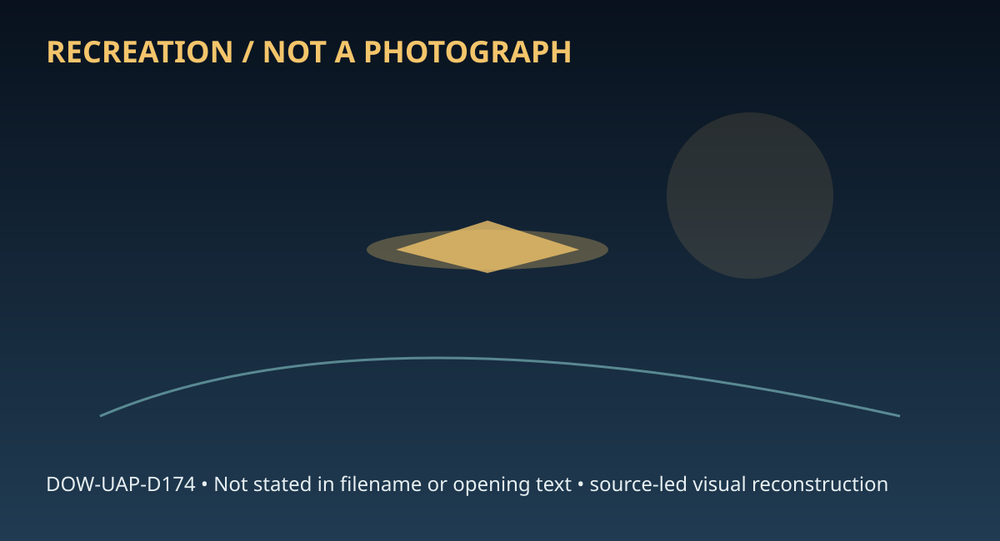

Release 07 / archival case file / DOW-UAP-D174
D174 Utah Ranch Investigation Report April 2010
This d174 utah ranch investigation report places a ranch, report, analysis, personnel, lights thread in a 2010 Utah Ranch record.
ID: DOW-UAP-D174
Filename:
DOW-UAP-D174-Utah_Ranch_Investigation_Report_April_2010.pdfDate marker: 2010
Location: Utah Ranch
Agency or collection signal: BAASS
Pages read: 60

RECREATION / NOT A PHOTOGRAPH. The diagram is an interpretive editorial aid, not source imagery.
What this document says
The opening page's extracted text begins: “IIIEll6"ll'lll,,.,,..e'E .lll'INlll..-,IlllT#lll'I • Utah Ranch Investigation Utah Task Force Investigation: March 22 - 26, April 19 - 23, 2010 AAP Person 7 Task Force Director) Inv. AAP Person 41 Inv. AAP Person 14 AAP Person 29 Scientist _________, AAP Person 28 Scientist”
Across the 60 pages, the recurring terms are ranch, report, analysis, personnel, lights. Those details belong to this file, not to a generic case template. Page-level reading follows:
- Page 1: IIIEll6"ll'lll,,.,,..e'E .lll'INlll..-,IlllT#lll'I • Utah Ranch Investigation Utah Task Force Investigation: March 22 - 26, April 19 - 23, 2010 AAP Person 7 Task Force Director) Inv. AAP Person 41 Inv. AAP Person 14 AAP Person 29 Scientist _________, AAP Person 28 Scientist
- Page 2: Ill.Ell...,IE#.11,,ICE lll'l,.,CEI,,1c1,,.,,,is• Utah Ranch Investigation Utah Task Force Investigation: March 22 - 26 April 19 - 23, 2010 AAP Person 7 (Task Force Director) AAP Person 29 Scientist ...................- ..........------...... AAP Person 28 Scientist 1
- Page 3: Table of Contents List of Figures.............................................................................................................3 Executive Summary ...................................................................................................4 Map of Creature Sightings .......................................................................
- Page 4: 1 2 3 4 5 6 7 8 9 10 11 12 13 14 15 List of Figures Figure - Hair Sample from reported "Skinwalker" sighting on 1843(a)(2) property ......18 Figure - Hair Sample from reported "Skinwalker' sighting on property ......19 Figure - Hair Sample from reported "Skinwalker' sighting on property ......20 Figure - Hair Sample from reported "Skinwalker' sighting on pro
- Page 5: - ------------- Executive Summary On March 22-26, 2010 and April 19-23, 2010 a team of four BAASS personnel traveled AAP ~erson 4 to Fort Duchesne, UT to continue an ongoing investigation surrounding~i:!i"nch property. This team consisted of two investi ators,lAAP Person 41 land ------ ---- .. and ~~---~erson two scientists,IMP Person 29 Iand PPerson 28 The
- Page 6: Map of Creature Sightings from Approximately Three-Mile Radius around the Ranch A Google Earth map of the ranch and surr,ounding areas was created (approx altitude of map was from 30,000 feet). The locations of each creature sighting together with last known direction of travel were obtained from each eyewitness and then plotted on the map. Then, using an as
- Page 7: - - -
- Page 8: Utah Ranch Report Abstract The "Utah Ranch" investigation is an ongoing project which to date has incorporated several deployments of investigators, scientists and engineers. The primary focus of the Utah ranch investigations are: • To comprehensively interview a large number of people who have lived in the area surrounding the Utah Ranch in order to delinea
- Page 9: first hand encounters. Eleven (11) separate individuals witnessed a bipedal "dog-like" creature and/or orbs of light at different times in different locations near the Utah Ranch property. Many of 1he reported observations took place during daytime and nighttime and occurred from twenty years ago to as recent as April 2010. The eyewitness ages ranged from fi
- Page 10: the second large spike was 1232.5, 1235.5 and 1238.5 MHz. The signals fell in the frequency bands of 1164-1215 and 1215-1240 MHz. This space is allocated for Earth exploration-satellite (active), radio location G56, radio navigation-satellite (space-to- Earth) (space to space) G132, and space research (active) . Provisions G56 and G132 state these frequency
- Page 11: Investigative / Scientific Summary 1843(a) I 1(2) Family Thel1843(a)(2) Iwere re-interviewed for the purpose of collecting a more complete set of data on their encounters with both the red ball of Ii ht and the creatures. 1843(a).(?L .l lson,l1843{a)(2) Iand his 18-year-old girlfriend 1843(a)(2) were previously identified as witnesses to the anomalous activi
- Page 12: ~ approximately seven (7) years ago (winter of 2003). The arm was covered in human- like thick, black hair/fur (three inches long). The arm was about three (3) feet long. ~ said the arm was most definitely not human. The nails on the hand were dirt %Mias a dog's nails) and the fingers were monkey-like. I -( Jsawt"' (4~fiogers1843i•H21 1843(a.).(2) and no thu
- Page 13: 1843(a)(2) 1 1 1843(a)(?L ,E]made a point to mention the humming noise they hear from time to time. She describes it as hovering around the house and it began a couple of weeks prior to this 1843(a)(?J. interview: E::] says it sometimes shakes the windows of the house. 1843(a)(?L. LJalso recalls seeing what she described as "a portaf' when she was younger af
- Page 14: Was there any kind of smoke or heat related to this portal? No Did the portal exhibit any kind of travel behavior? No, it was just stationary. Did it seem to react to any kind of stimuli? No How far up in altitude did it go? Maybe about thirty to forty feet high. Did it seem to exhibit any magnetic properties? No Did it seem to cause any noticeable atmospher
- Page 15: 1a43(a)(2) 1 In the meeting withl1843(a)(2) hhe biological objective of the interview was to obtain detailed physiological effects of the red ball of light based on the fact in a previous 1843(a)(?L interview! ~ndicated he experienced numbness and warmth when the red ball of light came within a few inches of his face. Biologist IAAP Person 29 I designed ques
- Page 16: Did the red ball of light affect or burn your eyes? No Was your vision clear afterwards? Yes Any long term effects on your eyes? No Did you experience a headache after the experience? No Were you able to sleep okay that night? Yes 15
- Page 17: .. ... · ••• 1843(a)(2) 1 1 The team also visited withl1843(a)(2) lat his home on 03/24/2010 at approximately 1030 hours. The interview was beneficial as the team was able to gather additional _details on.~~~~(~)(2) the anomalous lights and creatures witnessed by [3 Add'iUOiially,LJreparted ~fl 1~~~.(~)(2) incident which had happened two nights prior involvi
- Page 18: A house, but stood by his front door looking out. He said it typically leaves an odor W behind, but since he did not leave his home he was unable to comment on an odor. Recalling his encounter with the Skinwalker at l1843(a)(2) Iin January of 2010, he described the creature to be six feet tall and hunched over and weighing approximately 250 lbs. He could see
- Page 19: - Below are photographs of the hair sample which was collected from theG ·proJ)erty18~~~~)(2l during the March deployment. Specific information regarding the scientific analysis of the sample can be located in the Scientific Analysis section of the report. Please see Figure 12 and Figure 13 for microscopic photographs of hair sample. Figure 1 - Hair Sample f
- Page 20: Figure 2 - Hair Sample from reported "Sklnwalker" sighting on~ property ~ 19
- Page 21: 20
- Page 22: Figure 4 - Hai r Sample from reported "Sklnwalker" sighting o 1843(a)(2) property 21
- Page 23: Figure 5 - Hair Sample from reported "Skinwalker'' sighting o1 1843(a)(2) !property 22
- Page 24: Figure 6 - Unknown hair sample - close up photo. Sample taken froni1843(a)(2) !residence 23
- Page 25: • --- I1843(a)(2) Contact was made with 1843(a)(2) however he refused to share details because he 1843(a)(2) said he was "sworn to secrec y some people he refused to identify~ ----- jrefused • •••••••• to tell investigators why or who swore him to secrecy.r---=J.said-ifthings ''.ca/m.down"1843(a)(2) he would be willing to share his story. In another atte~ont
- Page 26: I1843(a)(2) On April 20, 2010, a re-interview withl1843(a)(2) ras conducted to obtain additional detailed descriptions of the dog-like creatures she encountered twice in September 2009. Details of the encounters can be found in the September investigative reports. 1843(a)(2) I- Isummarized her first sighting which occurred on September 11 , 2009 at their res
- Page 27: • 1843(a) (2) described how sometimes she hears a mysterious sound of kids playing. The 1 43 2 soun seems to be emanating from the ceiling, and happens when her children are ~ (~)( ) either not home or asleep. She guesses the sound may be spiritsl .... Jstatedc=;)..1a4~(a)(2) 1843(a)(?1 EJ her husband, has also heard this. When asked to describe what she mea
- Page 28: · 11843(a)(2) In the meeting withl1843(a)(2) Ion April 21, 2010, a main objective was to obtain more detailed information about the creatures he has witnessed throughout his life. Please see the attached Dog-like Creature spreadsheet for supplemental information. Upon asking l 1843(a)(2) Ifor detailed information concerning the creatures, he asked for a pen
- Page 29: 1843 2 The second creatur~ (a)( ) Idrew is more dog-like in form. The black furred creature had a pig-like snout. The snout was covered in fur. When he came upon the creature, it was sitting and staring at him. The creature, which was the size of a "big man", appeared to be hostile. This frightetne 1843(a) and he fled the area. (2) Figure 8 - Dog-llke creatu
- Page 30: Scientific Analysis Current plant experiments Biosensor Plants AAP Person On April 6, 201 0 biosensor plants were transported to the I · I Ranch;·····s,x4 • Spiderwort plants and six Tobacco Plants. These plants will serve as biosensors for the presence of various types of radiation and/or chemicals/materials which can damage DNA. Three of each plant was pla
- Page 31: ranch allow, plants can be moved to outside locations, either in pots or perhaps planted directly in the ground.IMP Person 29 !inspected all Tobacco leaves for the presence of dark green spots; none are present at this time. • Spiderwort: This assay consists of microscopic observation of stamen hairs for alterations in hair cell coloration from blue to pink.
- Page 32: Seed Experiment A seed germination and growth experiment was set up at both BAASS and l~P Person Ranch on April 22, 2010. AAP Person 18 set up the BAASS control experiment while Biologist AAP Person 29 set up t e experiment at I -- jRanm_Irailer Jn _two _/J.AP_Person different locations. One location is the trailer living room while the second is the trailer
- Page 33: • To control for extraneous light, large enclosures were placed over the grow light systems. The amount of light will therefore be consistent. Pictures will be taken and germination charts will be filled out twice daily for all locations. Once germination data collection has been completed, germination charts will be produced. When the experiment has been co
- Page 34: Appendix Game Camera identification and GPS coordinates for respective cameras 1843(a)(3) BAASS 0001 BAASS 0002 BAASS 0003* BAASS 0004* BAASS 0005* BAASS 0006 BAASS 0007 BAASS 0008* BAASS 0009* * Cameras no longer in service 33
- Page 35: Figure 12 - Celestron LCD Digital Microscope Model #44340 (magnification 10x objective lens) digital image indicates the presence of a hair follicle located on a strand which can be analyzed for nuclear DNA for species identification. 34
- Page 36: Figure 13 - Celestron LCD Digital Microscope Model #44340 (magnification 40x objective lens) dlgital image Indicates the presence of a hair follicle located on a sample strand which can be analyzed for nuclear DNA for species identification. 35
- Page 37: 1843(a )(2) I'843(a)(2) 11843(a)(2) I MAY O 3 2010 April 27, 2010 BY: IAAP Person 7 Items Received On April 2, 2010, thd 1843( a)(2) Ireceived four hair samples submitted by you for the puroose ofmitochondrial senuencing. The samples were assigned the following laboratory ca.~e numbers: 1843(a)(3) Tests Conducted DNA was extracted according to standard opera
- Page 38: BAASS Webmoil :: boir analysis Page 1 of2 S ubject Sender Recl11lent D a t e AAP Person ...-.....-.. ·· -c::J the codes on the report tromj1 843(a )(!rega;;i~; th: hair analyeh 7 are a• tollowe, • 1843(a )(3) !I I• Hair trocn tho rod •tained rock found po tb~ ~ nf h . ... _________, • control hair■ troa1 one ot the dog• on(1843{a[2 ! 1843(a )(3 ) ~ proj :n
- Page 39: Dog-like Creature Witness Descriptions 1843(a)(2) Date(s) 3times (dates unknown) Fall 2008 Winter 2005 Winter 2007 (night) Winter 2007 (night) 9/11/2009 (1000 hours) Summer 2008 Winter 2003 (3/4 AM) 3/22/2010 (App. 8 PM) Multiple times Multiple times Jan.2010 (3 AM) 9/12/2009 (night) 2005 Height 6 ft (standing on hind legs) 6 ft tall (standing on hind legs)
- Page 40: Dog-like Creature Witness Descriptions 1843(a)(2) Nose Snout like a dog Snout like a dog *Not observed #See drawing from 4/10 -Not Observed "Not observed NIA .. Not observed Pig-like snout covered with fur. Snout was not pointed. More human- like. ~Not Observed Round, Eyes slanted towards outer edges. Red. Didn't glow *Not observed Glowing Red #See drawing f
- Page 41: Dog-like Creature Witness Descriptions 1843(a)(2) Covered in fur. Bent at Appeared elbows, #See bent at the Hairy Arm #See Front Not ' "'Not elbows -Not ....Not Arms almost observed drawing Observed when the app. 3 feet observed drawing legs/anns Observed kangaroo- from 4/10 creature long from 4/10 dangling like. was standing on 2 legs. 4 fingers (10 inches
- Page 42: · Dog-like Creature Witness Descriptions 1843(a)(2) 1843 """ (a)(2) -----.. ... When running the knees bent In a human- Movement like nature. Runs faster 1843(a)(2 911 two-legs than on four. Sulfur-like, Odor wet dog The -··~- - - ·creature... was laying down on the ground, Ran like a human .....- - IJ2:nffi) creature stood up on two legs. Swamp-like Cre
- Page 43: • ··· • Dog-like Creature Witness Descriptions 1843(a)(2) Heard -Features One howling The not particular outside. creature observed time that Then she . was atop a since the I - -l ---·-- saw a dark f2 small evening saw tt11s shadowy 1"::~;;:<, •• - - - .. ""'~"". __ ~· E].., :: ::~-:: = r:: _.. ....--~--- -· 1843(a)(i _::---- _ ~- ~~ "';;,;;·- .,;;;til, ~
- Page 44: -- . Bird-like Creature \ .,1ess Descriptions I1843(a)(2) Summer 2006 OR 0ate(s) Summer2007 Unseen. The entire Feathers Brown and Black creature was black Head Was a huae beak Neck Beak 2 feet Iona Eves Prehistoric looking. Body 3 feet long, skinny size of a SUV, stood 4 ft hiah 1 wing was the size of a Wings pterodactyl. The 12 ft wing span car legnth and 4
- Page 45: Little People Witness Descriptions 1843(a)(2 !) 1843(a)(~ 1843(a)(2) Date(s) Summer of 2006/2007 Hair/Fur Covered with fur like a monkey Height 3- 4 feet 2-3feet Weight 40- 50 pounds Head Human-like Neck Not observed Nose Not observed Eyes Not observed Ears Not observed . Shoulders Not observed Body Can be from the size of Compared to a troll. an ant to abou
- Page 46: Lighting Anomaly 1843((1) (2) · Witness 1843(a)(2) Star-like light 1843(a)(2) Blue Orb 1843(a)(2) Glowing Balls of White Light 1843(a)(2) Blue Orb 1843(a)(2) several Lights Coming up from the Gravel Pit 1843(a)(2) ·-· !Golden Ort> 1843(a)(2) Light over Ridge bv Home !unusual 1igms m the rainy season Single or Multlple Lights Size Shape looked to be size of a
- Page 47: 184:}_{i;l) (2) 184;!(.:!} · (2) L. Witness 1843(a)(2) Star-like light 1843(a)(2) Blue Orb 1843(a)(2) Glowing Balls of White Light 1843(a)(2) Blue Orb 1843(a)(2) :several ugnts Coming up from the Gravel Pit 1843(a)(2) ....--~·--·· !Golden uro 1843(a)(2) Light over Ridge bv Home ··-·- Iunusual lights in the rainy season Pulsatlng or Constant Light light Inten
- Page 48: 1843,_Ca) (2) 184;3__ (a)(2) Witness 1843(a)(2) Star-like light 1843(a)(2) Blue Orb 1843(a)(2) Glowing Balls of White Light 1843(a)(2) 1::1Iue oro 1843(a)(2) Several Lights Coming up from the Gravel Pit 1843(a)(2) 1--- !Golden Orb 1843(a)(2) Light over Ridge by Home ···-- !unusual lights in the rainy season Travel Reaction to Behavior Stimulus zigzag/darting
- Page 49: 184:l(a) (2) Witness 1843(a)(2) Star-like light 1843(a)(2) Blue Orb 1843(a)(2) Glowing Balls of White Light 1843(a)(2) Blue Orb 1843(a)(2) Several Lights Coming up from the Gravel Pit 1843(a)(2) I 1843(a)(21Golden Orb 1843(a)(2) Light over Ridge by Home - ··-- !unusual lights in the rainy season Did the Distance light/orb take Angle of from off quickly? Take
- Page 50: · Regular Occurrence or Witness One Time 1843(a)(2) Star-like light once 1843(a)(2) Blue Orb once 1843(a)(2) Glowing Balls of regular White Licht occurrence 1843(a)(2) Blue Orb once 1843(a)(2) Several Lights Coming up from the Gravel Pit one time 1843(a)(2) 1843(a)(21Golden Orb one tlme 1843(a)(2) Light over Ridge bv Home one time · !unusual lights in the r
- Page 51: 1843(a)(;2) Single or Transparent or Illuminating to Multiple Translucent or Self Surrounding Color Changing . Witness Lights Size Shaoe Opaaue lllumlnatlng Objects Description Colors IUnusual 11gnts m the rainy single and size of season multiple headlights round translucent yes yes white no 1843(a)(2) one larger grapefruit white with white orb with white an
- Page 52: 1843(a)(2) Witness ' !Unusual lights in the rainy season 1843(a)(2) white orb with red circling light 1843(a)(2) white orb with red circling light 1843(a)(2) l1ight flying over neighbors house 1843(a)(2) floating lights at night 1843(a)(2) star-size lights in the sky 1843(a)(2) cobalt blue lic::iht 1843(a)(2) Red Ball of Light 1843(a)(2) Red Ball of Light Pu
- Page 53: 1843(a)(2) I> Witness !Unusual lights in the rainy season 1843(a)(2) white orb with red circling light 1843(a)(2) white orb with red circling light 1843(a)(2) hight flying over neighbors house HS4J(a)l.::) floating lights at night 1843(a)(2) star-size lights in the sky 1843(a)(2) cobalt blue lic::iht 1843(a)(2) Red Ball of Light 1843(a)(2) Red Ball of Light
- Page 54: I 1843(a)(2) ' ,' ' ' Witness IUnusual lights in the rainy season 1843(a)(2) white orb with red circling light 1843(a)(2) white orb with red circling light 1843(a)(2) light flying over neighbors house 1843(a)(2) floating lights at night 1843(a)(2) star-size lights in the sky 1843(a)(2) cobalt blue light 1843(a)(2) Red Ball of Light 1843(a)(2) Red Ball of Lig
- Page 55: 1843(a)(~) Regular ; Occurrence or \ (Witness One Time !Unusual lights in the rainy regular season occurrence 1843(a)(2) white orb with red circlinr.i lir,iht once 1843(a)(2) white orb with red circling light once 1843(a)(2) light flying over has seen them neighbors house before 1843(a)(2) floating lights at night 1843(a)(2) star-size lights in the sky 1843(
- Page 56: Witness Single or Multiple Lights Size Shape Transparent or Translucent or Opaque Self Illuminating Illuminating to Surrounding Objects Color Descriotion Changing Colors Single unsure unsure Transparent no no clear no 1843(a)(2) Portal
- Page 57: Witness Pulsating or Constant light Light Intensity Any rings around the llght Gas orSolld Object Material Smell Sound Tail Smoke Radiation of heat pulsed or rippled like water n/ a no unsure- not solid unsure none none no no none 1843(a)(2) Portal
- Page 58: : Witness Travel Behavior Reaction to Stimuli Soeed Spinning .. Highest Altitude Exhibit Magnetic Properties •••-•-"' ,.,.,,., UI Object Causes Air Disturbance Cause Atmospheric Effects Did the light go out? stationary no none no extended up toward the sky about 30-40 feet no no no Still visible when they left 1 B43(a)(2) Portal
- Page 59: Witness Did the llght/orb take off quickly? Angle of Take-off Distance from Viewer Cause Fear or Other Emotion? Pet Reaction to Anomaly Daytime or Nighttime Duration of Event (minutes) How long Ago Was the Sighting? n/a n/a around 100 feet peaceful feelings unknown daytime/ mid- afternoon unknown- it was still there when they left over twenty years ago 1843(
- Page 60: I I Witness Regular Occurrence or One Time 1843(a)(2) once Portal
Historical context and disclosure schema
Read in context, this record belongs to the 2010 information environment: BAASS paperwork, a Utah Ranch setting, and the reporting conventions visible in the source. Its broader disclosure value is procedural as well as anecdotal: it shows how an observation, material question, investigation, or analytical program was routed, described, and preserved. That makes it comparable to other Release 07 records without collapsing unlike evidence into one event.
Evidence limits
The source establishes that this document exists and records what its authors or quoted witnesses wrote. It does not, by itself, prove the identity, performance, origin, or physical reality of the reported subject. Extraction preserves wording but cannot restore missing attachments, authenticate provenance, or independently validate testimony. Interpretations beyond the page-specific record remain hypotheses.
Source: supplied PDF in research/tranche-07. This article is a research aid, not a claim that the reported object was non-human.